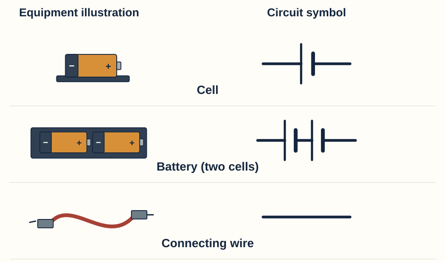
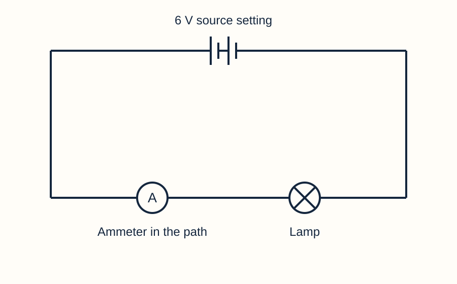

Year 7 · Current electricity · Help for everyone
Equipment and symbols
Connect equipment names, circuit symbols and what each part does.
Choose another resource
Keep this beside your lesson. Write and draw in your book or on a printed copy. You can explain aloud or direct a scribe. This page does not save answers.
Sources and wires

Cell / battery: supplies energy electrically. The long line in a cell symbol is the positive terminal; the short line is negative.
Wire: connects terminals to make conducting paths.
In Circuit Lab, choose Battery for the adjustable source. Its voltage setting does not count the cells in the drawing.
Lamps, switches and an ammeter

- Lamp: transfers energy by light and heating. In the lab, look for the bulb.
- Switch: opens or closes a connection. Look for the lever between two contacts.
- Ammeter: measures current. Look for A.
Your turn
Which tiny change in the switch symbol shows that the current path is broken?
Say your answer, point and explain, or write in your book.
Model answer & success criteria
The line no longer touches both contacts: it leaves a gap.
Success: Identify the gap, not simply a different line angle.
Choose and connect the right meter


A → current → amperes. Remove a wire and reconnect through the ammeter, leaving no bypass.
V → potential difference → volts. Keep the lamp path. Connect one meter lead to each lamp terminal.
In the simulator, A and V are printed on the meter tiles. A dash on a floating voltmeter means no defined reading, not zero.
Your turn
You want to measure the voltage across a lamp. Which meter do you choose, and where do its two leads go?
Say your answer, point and explain, or write in your book.
Model answer & success criteria
Choose the voltmeter. Connect one lead to each lamp terminal, leaving the lamp circuit intact.
Success: Name V and describe both connections across the lamp.
Resistor
A resistor opposes current. At the same voltage across it, a larger resistance gives a smaller current.
The standard symbol is a rectangle between two wires. In Circuit Lab it looks like a plain ceramic block. Read the caption for its resistance in ohms (Ω).
Your turn
A resistor changes from 10 Ω to 20 Ω while its voltage stays the same. Predict the change in current.
Say your answer, point and explain, or write in your book.
Model answer & success criteria
The current halves: I = V ÷ R. This prediction assumes the voltage across that resistor stays the same.
Success: State a smaller current, or half as much, and identify the unchanged voltage.